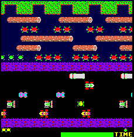

2007.04.22., vasárnap
tomcat
blog
droidzóna
levrov
Ma nem volt munkanap. Mármint nekem sem. Ez nagy dolog ám! Bár sokáig nem bírtam meló nélkül, és nekiálltam dolgozgatni a Freax második kötetén. Amikor meguntam, elõszedtem a MAME fedõnevû emulátort, amellyel õsrégi játéktermi arcade játékokat lehet PC-n futtatni, és újrafelfedeztem gyerekkoromat. Dig Dug, Galaga, Vanguard, Gyruss, Frogger, River Patrol, Donkey Kong, és az összes többi, ami fölött kamaszkölyökként a Vidámpark óriási játéktermében órákat töltöttem el, zsebpénzem utolsó filléreit is beledobálva. Aztán anyámék mindig jól megvertek, ha megtudták, mert rögeszméjük volt, hogy ezek nyerõgépek, vagyis hogy én szerencsejátékozom, és ugye a legegyszerûbb, ha meg se nézzük, mivel tölti a gyerek az idejét, csak megtiltjuk neki. Ebbõl a huzavonából lett az, hogy összespóroltam a pénzt életem elsõ Commodore 64-esére, és most itt vagyok programozóként, és így esett, hogy blogot írok, meg mellette könyvet is.
Fiatalabb olvasóknak bemutatom kölyökkorom kedvenc játékait. Annak idején 5 forintost kellett bedobni, hogy mûködjenek. Késõbb tízest.
A feladat: a sok kis gennyedéket halomra lõni. Elég nehéz, mert repülnek. A végén szét kell lövöldözni egy nagy ûrhajót, amit ezek védenek. Amúgy 1980-ban készítették.
Ha lehet választani, ez a legkedvencebb kedvencem. Ezzel a kis holdjármûvel kell legyõzni az akadályokat az oldalirányba scrollozó terepen, miközben repülõ csészealjak is támadnak. Ha elérünk A-tól Z-ig, az nekünk jó. A játék addiktivitását fokozza a zene, ami amúgy egy baromi primitív chiptune, de pont ezért. 1982, respect.
Egy zseniális játékötlet abból az idõbõl (1983), amikor még nem tudtuk, mi az, hogy 3D, és ez mégis az. Ûrhajónkkal a képernyõ szélén mozoghatunk körbe, és a közepe felé lõhetünk, "befelé". Onnan jönnek a gonosz ellenségek, és persze száguldanak a csillagok. A mûfaj neve egyébként tube shooter, csak ezt mostanra elfelejtették. A zene ezúttal is addiktív. Pályáról pályára haladva kell elérni a Naprendszer bolygóit, s végül a Földet. Nem egyszerû!
Ööö, hát nem is tudom, végül is vagy a Moon Patrol, vagy ez. Beteg japán játék 1981-bõl: a kis, szkafanderes fickóval a föld alatt kell alagutakat fúrni, és a szörnyeket (Pooka és Fygar) biciklipumpával kinyírni, vagyis addig pumpálni, amíg kidurrannak. Aki ezzel nem akar bíbelõdni, beáshat a sziklák alá, azok is le tudnak esni.
Antiszoc-randalieren 1979-bõl. Nem kell hozzá sok ész, mész oszt' lõsz. A Space Invaders-hez képest már ez is nagy dolog volt.
A SEGA klasszikusa 1986-ból. Autóversenyzõs játék, ami azért nagy dolog, mert egyébként utálom az autós játékokat. A Commodore 64 verziót is milliók imádták, fõleg klasszikussá vált zenéje miatt, amit egyébként a Press Play on Tape és az Instant Remedy is feldolgozott. A feladat? Menjél, mint a hülye, hátha idõben érsz el az ellenõrzõ pontig.
Jó brutális japán játék, ma már simán betiltanák, de hát 1987-ben még nem volt szokás az ilyesmi. Egyedül vagy ketten lehet játszani, a feladat, hogy a gonosz géppisztolyos bandavezér fogságába esett csajt kiszabadítsuk. Bruce Lee utánérzés, durva fejrúgások, baseball-ütõ, dobókés és arcon térdelés. A csajt amúgy a második rész elején lelövik majd, de az a rész elég szar is lett. A két szereplõ neve egyébként Hammer és Spike, és a végén egymással verekednek a csajért.
Megint egy nem túl sok gondolkodást igénylõ, ám annál szórakoztatóbb platform-lövöldözõs játék. A feladat: mindenkit kinyírni, vagy helikopterrel, vagy dzsippel. Utóbbi esetben a feeling valami olyasmi, mint a Moon Patrol-ban, csak többet kell lõni. 1988-at írunk, és nagy dolog volt ez akkor.
Mario felmászik és megmenti a csajt. Ha sikerül. Az évszám 1981. Amúgy Crazy Kong néven is futott.
Micsoda ötletek teremtek 1981-ben! Valaki meglátott egy országúton átugrálni készülõ békát, és eszébe jutott, hogy ebbõl lehetne csinálni egy videójátékot. Csinált, és kurva jó lett.
| << elõzõ nap | következõ nap >> |